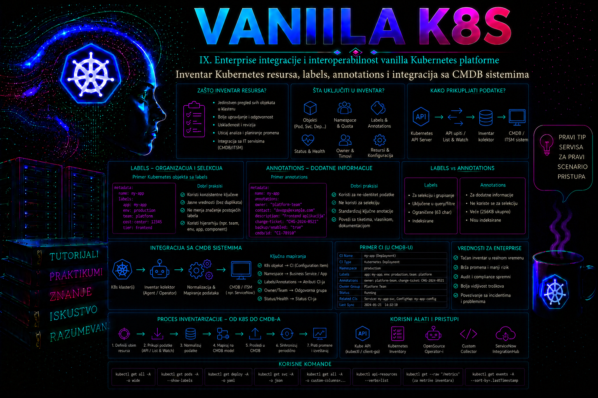

Vanilla Kubernetes

U enterprise okruženju Kubernetes klaster nije izolovano ostrvo, već deo šireg informacionog sistema u kome postoje vlasnici aplikacija, poslovne usluge, troškovni centri, ugovori o nivou usluge, procedure za upravljanje promenama, sistemi za nadzor i centralna konfiguraciona baza podataka. Kubernetes API veoma precizno opisuje trenutno stanje objekata u klasteru, ali sam po sebi ne zna koja poslovna služba koristi aplikaciju, ko odobrava njene promene, kojem servisu u CMDB sistemu pripada ili koliko dugo određeni resurs mora da postoji. Te informacije moraju biti uvedene kroz kontrolisan model metapodataka i povezane sa spoljnim sistemima.
Inventar Kubernetes resursa zato nije samo rezultat komande kubectl get. Produkcioni inventar predstavlja kontrolisanu evidenciju tehničkih objekata, njihovih odnosa, vlasništva, životnog ciklusa i povezanosti sa poslovnim konfiguracionim stavkama. Dobar inventar omogućava da administrator odgovori na pitanja koja se javljaju tokom incidenta, revizije ili planiranja promene: koji deployment pripada određenoj aplikaciji, na kojim čvorovima rade njegovi podovi, koji servisi ga izlažu, koji persistent volume claim koristi, ko je vlasnik sistema i koja CMDB konfiguraciona stavka predstavlja tu poslovnu uslugu.
Inventar Kubernetes resursa kao izvor operativne istine
Kubernetes objekti su trajne reprezentacije željenog i zabeleženog stanja klastera. Svaki objekat dostupan preko Kubernetes API-ja ima najmanje polja apiVersion, kind i metadata, dok većina radnih resursa ima i spec i status. Polje spec opisuje željeno stanje koje je zadao korisnik ili kontroler, a status stanje koje su kontroleri i kubelet čvorovi do sada ostvarili. Inventarski sistem mora razlikovati ova dva nivoa. Deployment sa željene tri replike i samo dve raspoložive replike postoji u inventaru, ali istovremeno nosi operativni simptom koji zahteva reakciju.
Kubernetes API je autoritativni izvor za objekte koji trenutno postoje u klasteru, ali nije zamena za CMDB. Kubernetes objekti su dinamični: pod može nestati i biti ponovo kreiran sa novim imenom i UID vrednošću, ReplicaSet se menja tokom rollout-a, a status i resourceVersion mogu se promeniti više puta u kratkom periodu. CMDB je obično namenjen stabilnijim konfiguracionim stavkama, njihovim vlasnicima i međusobnim relacijama. Zbog toga se u CMDB najčešće ne upisuje svaki prolazni pod kao trajna poslovna konfiguraciona stavka. Podovi se mogu čuvati kao kratkotrajni tehnički inventar ili operativni odnos, dok se namespace, workload, servis, ingress, čvor, storage zahtev i klaster tretiraju kao stabilnije stavke.
Za svaki inventarisani objekat korisno je sačuvati identitet klastera, API grupu, vrstu resursa, namespace, ime, UID, datum kreiranja, relevantne labels i annotations, vlasničke reference, željeno i ostvareno stanje i vreme poslednje sinhronizacije. Kubernetes UID je posebno važan jer razlikuje dva objekta sa istim imenom koji su postojali u različitim periodima. Ime i namespace nisu dovoljni za istorijsku korelaciju: objekat može biti obrisan, a zatim ponovo napravljen pod istim imenom.
| Podatak | Administratorska svrha | Napomena za CMDB |
|---|---|---|
| cluster ID, kind, namespace i name | Pronalaženje i prikaz resursa | Čine čitljiv složeni identifikator, ali ne zamenjuju UID |
| metadata.uid | Jedinstveno razlikovanje životnog ciklusa objekta | Pogodan eksterni ključ za konkretnu instancu objekta |
| metadata.labels | Selektovanje, grupisanje i automatizacija | Koristiti samo odobrene ključeve za klasifikaciju |
| metadata.annotations | Dodatni opis, reference i integracioni podaci | Ne skladištiti tajne niti nekontrolisane velike sadržaje |
| ownerReferences | Razumevanje kontrolera i zavisnih objekata | Osnova za relacije, ali ne predstavlja svaku poslovnu zavisnost |
| spec i status sažetak | Poređenje željenog i ostvarenog stanja | Uvoziti samo polja potrebna za CMDB ili operativni inventar |
Labels kao kontrolisana klasifikacija resursa
Label je par ključ–vrednost pridružen Kubernetes objektu. Labels su namenjene identifikovanju grupa objekata i mogu se koristiti u selector izrazima. Kontroleri i servisi ih koriste kao funkcionalni deo arhitekture: Deployment povezuje ReplicaSet i podove preko selector-a, dok Service pronalazi odredišne podove na osnovu svojih selector-a. Zbog toga promena label vrednosti nije samo administrativno preimenovanje. Pogrešna promena može izbaciti pod iz skupa endpoint-a, poremetiti upravljanje workload-om ili izazvati preklapanje selector-a između aplikacija.
Ključ label-a može imati opcioni DNS prefiks i naziv odvojen znakom /. Prefiksi kubernetes.io i k8s.io rezervisani su za Kubernetes. Organizacija treba da koristi sopstveni DNS domen, na primer tashizza.example, kako se njeni metapodaci ne bi sudarili sa ključevima platforme ili drugih proizvoda. Vrednosti label-a su kratke i ograničenog formata, pa nisu pogodne za duge opise, liste kontakata ili JSON dokumente.
Zvanično preporučeni ključevi sa prefiksom app.kubernetes.io olakšavaju dosledno opisivanje aplikacija. Najčešće se koriste app.kubernetes.io/name, instance, version, component, part-of, managed-by i created-by. Oni nisu obavezni za rad Kubernetes jezgra, ali daju zajednički jezik alatima, administratorima i timovima. Organizacione labels mogu ih dopuniti podacima kao što su okruženje, kritičnost, vlasnički tim ili troškovni centar.
metadata:
labels:
app.kubernetes.io/name: inventory-api
app.kubernetes.io/instance: inventory-api-prod
app.kubernetes.io/component: backend
app.kubernetes.io/part-of: warehouse-platform
app.kubernetes.io/managed-by: gitops
tashizza.example/environment: production
tashizza.example/criticality: high
tashizza.example/owner-team: platform-operations
Model label-a mora biti definisan pre masovnog označavanja. Vrednosti kao što su prod, production i prd tehnički su validne, ali predstavljaju tri različite kategorije. Bez rečnika dozvoljenih vrednosti inventar postaje neupotrebljiv za pouzdane upite. Dobar standard određuje naziv ključa, značenje, dozvoljene vrednosti, resurse na koje se primenjuje, vlasnika podatka i pravilo izmene.
Administrator mora razlikovati labels namenjene selector-ima od labels namenjenih poslovnoj klasifikaciji. Selector labels workload-a menjaju se samo kroz kontrolisanu promenu manifesta i uz razumevanje ponašanja kontrolera. Poslovne labels, kao što su kritičnost i vlasnički tim, mogu biti predmet admission politike, GitOps provere ili periodične kontrole usklađenosti. Ručno dodavanje label-a komandom kubectl label korisno je za dijagnostiku i kontrolisane intervencije, ali u deklarativno upravljanom okruženju trajna promena mora biti unesena i u izvorni Git repozitorijum. U suprotnom će je sledeća sinhronizacija vratiti ili će klaster odstupati od dokumentovanog stanja.
Annotations za opisne i integracione metapodatke
Annotations su takođe parovi ključ–vrednost, ali se ne koriste kao selector-i. Pogodne su za podatke koji moraju pratiti objekat, a nisu namenjeni grupisanju: identifikator promene, CMDB identifikator, kontaktna grupa, referenca na dokumentaciju, checksum konfiguracije, podaci alata koji je objekat generisao ili strukturisan sadržaj koji ne može stati u label. Vrednosti annotations mogu biti obimnije i sadržati znakove koji nisu dozvoljeni u label vrednostima.
metadata:
annotations:
tashizza.example/cmdb-ci-id: "CI-K8S-APP-004271"
tashizza.example/change-record: "CHG-2026-0719"
tashizza.example/runbook: "urn:runbook:warehouse:inventory-api"
tashizza.example/data-classification: "internal"
tashizza.example/inventory-scope: "workload"Annotations nisu skladište za lozinke, pristupne tokene, privatne ključeve ili druge tajne. Korisnici sa pravom čitanja objekta mogu pročitati njegove annotations, a njihove vrednosti mogu dospeti u audit evidenciju, rezervne kopije, Git repozitorijume i spoljne inventarske sisteme. Annotation treba da sadrži referencu na tajnu ili identifikator zapisa u bezbednom sistemu, nikada samu tajnu.
Nije svaka annotation organizacioni podatak. Mnogi kontroleri, ingress implementacije, service mesh komponente, backup alati i GitOps sistemi koriste sopstvene annotation prefikse i specifičnu semantiku. Administrator ne sme menjati nepoznatu annotation samo zato što izgleda zastarelo. Prvo mora utvrditi koji kontroler je koristi, proveriti dokumentaciju konkretne verzije komponente i proceniti posledice. Neke annotations utiču na mrežno rutiranje, kreiranje cloud load balancer-a, ubrizgavanje sidecar kontejnera ili backup politiku.
Upravljanje promenom metapodataka i sprečavanje drift-a
Metapodatak ima vlasnika isto kao i svaka druga konfiguracija. Platformski tim obično poseduje rečnik ključeva i admission pravila, aplikacioni tim odgovara za vlasništvo i poslovnu klasifikaciju svoje aplikacije, a CMDB tim za CI identifikatore i pravila životnog ciklusa. Za svaki ključ treba dokumentovati izvor istine, dozvoljene vrednosti, resurse na koje se primenjuje, da li je obavezan, ko sme da ga menja i kako se rešava konflikt između Git-a, klastera i CMDB-a. CMDB povratna annotation ne sme postati konkurentski izvor za podatak kojim upravlja GitOps.
Komande kubectl label i kubectl annotate menjaju živi objekat. Bez opcije --overwrite odbiće zamenu postojeće vrednosti, što je korisna zaštita od slučajnog prepisivanja. Sa --overwrite promena je namerna i mora imati change zapis, prethodno očitanu vrednost i validaciju zavisnih selector-a. Sufiks - uklanja ključ. Sledeći primer prvo samo čita stanje, a zatim prikazuje state-changing postupke; u deklarativnom okruženju iste izmene moraju biti unesene u izvorni manifest.
# Read-only dokaz pre promene
kubectl get deployment inventory-api -n cmdb-demo \
-o jsonpath='{.metadata.labels.tashizza\.example/owner-team}{"\n"}'
# Menja stanje: kontrolisana zamena vrednosti
kubectl label deployment inventory-api -n cmdb-demo \
tashizza.example/owner-team=platform-operations --overwrite
# Menja stanje: dodavanje integracione reference
kubectl annotate deployment inventory-api -n cmdb-demo \
tashizza.example/change-record=CHG-2026-0719 --overwrite
# Menja stanje: uklanjanje annotation ključa
kubectl annotate deployment inventory-api -n cmdb-demo \
tashizza.example/change-record-
Posle promene proveravaju se efektivni metapodaci, metadata.generation i zavisni objekti. Promena same metadata vrednosti ne mora povećati generation, jer to polje prati promene željenog stanja relevantne za kontroler, pa se uspeh ne dokazuje samo njegovim povećanjem. Za selector label-e dokaz uključuje pod labels, Service selector i EndpointSlice; za GitOps objekat proverava se i status sinhronizacije. Rollback je vraćanje prethodno očitane vrednosti ili ponovno primenjivanje odobrenog manifesta.
Otkrivanje, filtriranje i izvoz inventara
Komanda kubectl api-resources prikazuje resurse koje konkretan API server trenutno podržava. To je pouzdaniji početak od fiksne liste zapisane u skripti, jer klaster može sadržati dodatne API grupe i CustomResourceDefinition objekte. Ipak, pokušaj izvoza svih resursa bez klasifikacije obično nije dobar pristup. Neki API objekti predstavljaju kratkotrajne događaje, bezbednosno osetljive podatke, interne lease objekte ili veliku količinu statusa bez CMDB vrednosti.
kubectl api-resources --verbs=list --namespaced=true
kubectl api-resources --verbs=list --namespaced=false
kubectl get deployments,statefulsets,daemonsets,services,ingresses,persistentvolumeclaims \
--all-namespaces \
-l 'tashizza.example/environment=production' \
-o wide
Za ručni pregled mogu se koristiti široki i prilagođeni tabelarni izlazi, JSONPath i puni JSON ili YAML. Za automatizovanu integraciju preporučuje se JSON jer zadržava tipove i strukturu podataka. Parsiranje podrazumevanog tabelarnog izlaza pomoću komandi grep, awk ili fiksnih pozicija kolona je nepouzdano: format je namenjen ljudima i može se razlikovati između resursa i verzija.
kubectl get deployments --all-namespaces \
-o custom-columns='NAMESPACE:.metadata.namespace,NAME:.metadata.name,UID:.metadata.uid,DESIRED:.spec.replicas,AVAILABLE:.status.availableReplicas'
kubectl get deployment inventory-api -n cmdb-demo \
-o jsonpath='{.metadata.labels}{"\n"}{.metadata.annotations}{"\n"}'
Kod velikih klastera API klijent mora podržati paginaciju i nastavak pomoću polja continue. Za kontinuiranu sinhronizaciju efikasniji je obrazac list-and-watch: klijent prvo učita početnu kolekciju i zapamti njen resourceVersion, a zatim prati događaje dodavanja, izmene i brisanja. Watch veza nije beskonačna ni trajno pouzdana. Klijent mora obraditi prekid veze, istek stare verzije resursa, ponovno listanje i duplikate. CMDB uvoz zato treba da bude idempotentan: ponovljeni zapis sa istim klasterom i UID vrednošću ažurira postojeću stavku umesto da pravi duplikat.
Periodični potpuni snapshot jednostavniji je za početnu implementaciju i korekciju odstupanja. Watch pruža manju latenciju, ali povećava složenost. U praksi se često kombinuju: događaji se obrađuju gotovo u realnom vremenu, a jednom dnevno ili nedeljno radi se puna rekonsilijacija kojom se pronalaze propuštene izmene i objekti koji su obrisani dok integracija nije radila.
Mapiranje Kubernetes objekata u CMDB model
Pre integracije mora se definisati koje Kubernetes vrste predstavljaju konfiguracione stavke, a koje samo njihove odnose ili operativne instance. Klaster se obično mapira kao infrastrukturna ili platformska CI stavka. Node predstavlja računarski resurs povezan sa virtuelnom mašinom, fizičkim serverom ili cloud instancom. Namespace može predstavljati administrativnu zonu, okruženje ili tehnički tenant. Deployment, StatefulSet i DaemonSet predstavljaju upravljane workload-e, dok Service i Ingress predstavljaju tačke mrežnog pristupa. PVC opisuje zahtev za skladištem i može se povezati sa PersistentVolume i spoljnim storage resursom.
Podovi zahtevaju posebnu odluku. Njihov životni vek može biti kraći od intervala sinhronizacije, pa njihovo čuvanje kao punopravnih CI stavki može proizvesti veliku količinu zastarelih zapisa. Za incidentnu analizu korisnije je da podovi budu deo observability ili operativnog inventara sa ograničenim periodom čuvanja. U CMDB se može čuvati zbirno stanje workload-a, broj željenih i raspoloživih replika i relacija ka čvorovima ili servisima.
Relacije se ne smeju zaključivati samo iz sličnih imena. Deployment upravlja ReplicaSet objektom preko ownerReferences, ReplicaSet upravlja podovima, a Service bira podove preko label selector-a. Ingress upućuje na Service po imenu. PVC se pojavljuje u pod template-u workload-a, ali stvarna veza prema PersistentVolume objektu vidi se kroz spec.volumeName na vezanom PVC-u. Integracioni proces treba da koristi ove eksplicitne podatke i da zabeleži kada relacija ne može pouzdano da se utvrdi.
CMDB identifikator može se vratiti u Kubernetes kao annotation tek nakon što CMDB kreira ili pronađe stavku. Taj postupak ne sme izazvati beskonačnu petlju: annotation promena povećava verziju objekta, što ponovo aktivira sinhronizaciju. Integracija treba da ignoriše izmene koje ne menjaju poslovno relevantan skup polja ili da izračuna hash normalizovanog inventarskog zapisa.
Bezbednost, ovlašćenja i pouzdanost integracije
Inventarski proces uglavnom zahteva operacije get, list i, kod watch integracije, watch. Ne treba mu automatski dodeliti cluster-admin. Čitanje Kubernetes resursa nije beznačajna privilegija: konfiguracije workload-a mogu otkriti nazive internih sistema, image registre, promenljive okruženja, mrežne adrese i poslovnu strukturu. Secrets se po pravilu potpuno isključuju iz inventara. ConfigMap sadržaj takođe se ne izvozi bez jasne potrebe; dovoljno je evidentirati postojanje, UID i vezu sa workload-om.
ServiceAccount namenjen integraciji treba da bude odvojen od administratorskih naloga. Njegov token se automatski projektuje u pod samo kada je potreban. Kod spoljnog procesa prednost imaju organizacioni identitet, kratkotrajni tokeni, OIDC ili druga kontrolisana autentikacija umesto statičnog dugotrajnog service account tokena. Prava treba proveravati komandama kubectl auth can-i pre puštanja procesa i nakon svake promene RBAC pravila.
Veza prema CMDB API-ju mora koristiti TLS i proveru sertifikata. Token ili klijentski sertifikat čuva se u namenskom sistemu za tajne ili Kubernetes Secret objektu sa odgovarajućim ograničenjima, enkripcijom podataka u etcd skladištu i kontrolisanim pristupom. Tajna se ne zapisuje u annotation, ConfigMap, image ili log. Integracioni program ne sme u poruci o grešci ispisati HTTP Authorization zaglavlje.
Logovi moraju omogućiti utvrđivanje vremena sinhronizacije, klastera, broja pročitanih i poslatih objekata, neuspelih vrsta resursa, HTTP statusa CMDB odgovora i identifikatora izvršenja. Payload sa kompletnim manifestima ne treba rutinski ispisivati. Audit evidencija API servera može pokazati koje je resurse integracioni identitet čitao ili menjao, ali audit politika i lokacija logova zavise od načina instalacije control plane-a. U kubeadm okruženju audit fajl se nalazi na putanji zadatoj opcijom --audit-log-path procesa kube-apiserver; u upravljanom servisu pristupa mu se kroz mehanizam cloud provajdera.
Integrisani praktikum: kontrolisani izvoz workload inventara u CMDB API
Poslovni i tehnički kontekst.
Organizacija koristi Vanilla Kubernetes klaster vk8s-prod-01. Tim za upravljanje konfiguracijama zahteva periodični izvoz Deployment, StatefulSet, DaemonSet, Service, Ingress i PVC objekata u centralni CMDB. U klasteru će biti pripremljen namespace cmdb-demo sa aplikacijom inventory-api i CronJob procesom cmdb-inventory-exporter. CMDB endpoint je bezbedna zamenska adresa https://cmdb-api.example.internal/api/v1/kubernetes-ci/import. U prvom prolazu koristi se režim DRY_RUN=true, pa se normalizovani JSON zapisuje u log umesto slanja.
Cilj i kriterijumi prihvatanja.
- Deployment i Service moraju sadržati standardizovane aplikacione i organizacione labels.
- Integracioni ServiceAccount sme da čita samo unapred definisane grupe resursa i ne sme da čita Secrets.
- CronJob mora završiti statusom
Completei u logu prijaviti najmanje jedan pronađen workload. - Svaki izvezeni objekat mora sadržati cluster, apiVersion, kind, namespace, name, UID, creationTimestamp, labels, annotations i sažetak stanja.
- Negativni test mora potvrditi odgovor
noza čitanje Secrets i neuspešan pokušaj njihovog listanja.
Referentno okruženje i preduslovi.
Administrator radi sa stanice admin01, ima funkcionalan kubectl kontekst za klaster i pravo da kreira namespace, workload, ClusterRole, ClusterRoleBinding, ConfigMap, Secret i CronJob. Klaster mora imati DNS i mrežnu putanju prema CMDB adresi kada se kasnije isključi dry-run režim. Referentni kontejner koristi Python 3.13 i samo standardnu biblioteku. U produkciji image treba preuzimati iz odobrenog internog registra, zaključati digest vrednošću i prethodno bezbednosno skenirati.
-
Provera konteksta i postojećeg stanja.
Pre kreiranja resursa administrator potvrđuje da radi nad očekivanim klasterom i proverava da li namespace već postoji. Pogrešan kontekst može dovesti do promene drugog klastera.
Validacija: naziv konteksta i adresa API servera moraju odgovarati klasterukubectl config current-context kubectl cluster-info kubectl get namespace cmdb-demo kubectl auth can-i create namespaces kubectl auth can-i create clusterroles.rbac.authorization.k8s.iovk8s-prod-01. OdgovorNotFoundza namespace prihvatljiv je samo ako se lekcija izvodi prvi put. Odgovori za potrebna prava moraju bitiyes. -
Kreiranje referentne aplikacije sa standardnim metapodacima.
Manifest formira namespace, Deployment i Service. Selector labels
app.kubernetes.io/nameiapp.kubernetes.io/instanceiste su u Deployment selector-u, pod template-u i Service selector-u. Poslovni metapodaci odvojeni su od funkcionalnih selector-a.
Validacija: rollout mora biti uspešan, dve replike raspoložive, a Service mora imati dva endpoint-a. Ako podovi nisu Ready, inventar će ispravno registrovati objekat, ali kriterijum funkcionalnosti aplikacije neće biti ispunjen.cat > 47-reference-application.yaml <<'EOF' apiVersion: v1 kind: Namespace metadata: name: cmdb-demo labels: tashizza.example/environment: production tashizza.example/owner-team: platform-operations annotations: tashizza.example/cmdb-ci-id: "CI-K8S-NS-004270" --- apiVersion: apps/v1 kind: Deployment metadata: name: inventory-api namespace: cmdb-demo labels: app.kubernetes.io/name: inventory-api app.kubernetes.io/instance: inventory-api-prod app.kubernetes.io/component: backend app.kubernetes.io/part-of: warehouse-platform app.kubernetes.io/managed-by: kubectl tashizza.example/environment: production tashizza.example/criticality: high tashizza.example/owner-team: platform-operations annotations: tashizza.example/cmdb-ci-id: "CI-K8S-APP-004271" tashizza.example/change-record: "CHG-2026-0719" tashizza.example/runbook: "urn:runbook:warehouse:inventory-api" spec: replicas: 2 selector: matchLabels: app.kubernetes.io/name: inventory-api app.kubernetes.io/instance: inventory-api-prod template: metadata: labels: app.kubernetes.io/name: inventory-api app.kubernetes.io/instance: inventory-api-prod app.kubernetes.io/component: backend app.kubernetes.io/part-of: warehouse-platform tashizza.example/environment: production spec: containers: - name: web image: registry.k8s.io/e2e-test-images/agnhost:2.53 args: - netexec - --http-port=8080 ports: - name: http containerPort: 8080 readinessProbe: httpGet: path: /healthz port: http initialDelaySeconds: 3 periodSeconds: 5 resources: requests: cpu: 20m memory: 32Mi limits: cpu: 100m memory: 64Mi --- apiVersion: v1 kind: Service metadata: name: inventory-api namespace: cmdb-demo labels: app.kubernetes.io/name: inventory-api app.kubernetes.io/instance: inventory-api-prod app.kubernetes.io/component: backend app.kubernetes.io/part-of: warehouse-platform tashizza.example/environment: production tashizza.example/criticality: high annotations: tashizza.example/cmdb-ci-id: "CI-K8S-SVC-004272" spec: selector: app.kubernetes.io/name: inventory-api app.kubernetes.io/instance: inventory-api-prod ports: - name: http port: 80 targetPort: http EOF kubectl apply -f 47-reference-application.yamlkubectl rollout status deployment/inventory-api -n cmdb-demo --timeout=120s kubectl get deployment,pods,service,endpointslice -n cmdb-demo \ -l app.kubernetes.io/instance=inventory-api-prod kubectl get deployment inventory-api -n cmdb-demo \ -o jsonpath='{.spec.replicas}{" desired, "}{.status.availableReplicas}{" available\n"}' -
Kreiranje minimalnog RBAC identiteta.
ClusterRole dozvoljava samo
getilistnad vrstama koje ulaze u dogovoreni inventar. Pravowatchnije uključeno jer se referentni proces pokreće periodično i pravi snapshot. Secrets, ConfigMaps, pod logovi, exec i proxy podresursi nisu dozvoljeni.
Validacija: očekuje secat > 47-inventory-rbac.yaml <<'EOF' apiVersion: v1 kind: ServiceAccount metadata: name: cmdb-inventory-exporter namespace: cmdb-demo automountServiceAccountToken: true --- apiVersion: rbac.authorization.k8s.io/v1 kind: ClusterRole metadata: name: cmdb-inventory-reader rules: - apiGroups: [""] resources: - namespaces - nodes - services - persistentvolumeclaims verbs: ["get", "list"] - apiGroups: ["apps"] resources: - deployments - statefulsets - daemonsets verbs: ["get", "list"] - apiGroups: ["networking.k8s.io"] resources: - ingresses verbs: ["get", "list"] --- apiVersion: rbac.authorization.k8s.io/v1 kind: ClusterRoleBinding metadata: name: cmdb-inventory-reader subjects: - kind: ServiceAccount name: cmdb-inventory-exporter namespace: cmdb-demo roleRef: apiGroup: rbac.authorization.k8s.io kind: ClusterRole name: cmdb-inventory-reader EOF kubectl apply -f 47-inventory-rbac.yamlyesza Deployment inoza Secret. Provera se obavlja impersonacijom ServiceAccount identiteta, pa ne zavisi od širih prava administratora.kubectl auth can-i list deployments.apps --all-namespaces \ --as=system:serviceaccount:cmdb-demo:cmdb-inventory-exporter kubectl auth can-i list secrets --all-namespaces \ --as=system:serviceaccount:cmdb-demo:cmdb-inventory-exporter kubectl auth can-i get nodes/proxy \ --as=system:serviceaccount:cmdb-demo:cmdb-inventory-exporter -
Priprema normalizacionog programa.
Program koristi projektovani ServiceAccount token i CA sertifikat, poziva Kubernetes API preko interne promenljive
KUBERNETES_SERVICE_HOST, prati serversku paginaciju i formira stabilan inventarski dokument. Izvoze se samo odobreni metapodaci i kontrolisani sažetak stanja; kompletnispec,status,managedFieldsi proizvoljne annotations ostaju izvan payload-a.
Program se na staniciimport json import os import ssl import sys import urllib.error import urllib.parse import urllib.request from datetime import datetime, timezone API_HOST = os.environ["KUBERNETES_SERVICE_HOST"] API_PORT = os.environ.get("KUBERNETES_SERVICE_PORT_HTTPS", "443") API_BASE = f"https://{API_HOST}:{API_PORT}" TOKEN_PATH = "/var/run/secrets/kubernetes.io/serviceaccount/token" CA_PATH = "/var/run/secrets/kubernetes.io/serviceaccount/ca.crt" CLUSTER_ID = os.environ["CLUSTER_ID"] CMDB_URL = os.environ["CMDB_URL"] DRY_RUN = os.environ.get("DRY_RUN", "true").lower() == "true" RESOURCES = [ ("/api/v1/namespaces", "Namespace"), ("/api/v1/nodes", "Node"), ("/api/v1/services", "Service"), ("/api/v1/persistentvolumeclaims", "PersistentVolumeClaim"), ("/apis/apps/v1/deployments", "Deployment"), ("/apis/apps/v1/statefulsets", "StatefulSet"), ("/apis/apps/v1/daemonsets", "DaemonSet"), ("/apis/networking.k8s.io/v1/ingresses", "Ingress"), ] ALLOWED_LABEL_PREFIXES = ("app.kubernetes.io/", "tashizza.example/") ALLOWED_ANNOTATION_PREFIXES = ("tashizza.example/",) with open(TOKEN_PATH, encoding="utf-8") as token_file: token = token_file.read().strip() tls_context = ssl.create_default_context(cafile=CA_PATH) def api_get(path, query=None): suffix = "?" + urllib.parse.urlencode(query) if query else "" request = urllib.request.Request( API_BASE + path + suffix, headers={"Authorization": f"Bearer {token}", "Accept": "application/json"}, ) with urllib.request.urlopen(request, context=tls_context, timeout=30) as response: return json.load(response) def api_list(path): items = [] continue_token = None while True: query = {"limit": "500"} if continue_token: query["continue"] = continue_token page = api_get(path, query) items.extend(page.get("items", [])) continue_token = page.get("metadata", {}).get("continue") if not continue_token: return items def selected(metadata, field, prefixes): return { key: value for key, value in metadata.get(field, {}).items() if key.startswith(prefixes) } def object_summary(kind, item): spec = item.get("spec", {}) status = item.get("status", {}) summaries = { "Deployment": { "desiredReplicas": spec.get("replicas"), "readyReplicas": status.get("readyReplicas", 0), "availableReplicas": status.get("availableReplicas", 0), }, "StatefulSet": { "desiredReplicas": spec.get("replicas"), "readyReplicas": status.get("readyReplicas", 0), "currentReplicas": status.get("currentReplicas", 0), }, "DaemonSet": { "desiredNumberScheduled": status.get("desiredNumberScheduled", 0), "numberReady": status.get("numberReady", 0), "numberUnavailable": status.get("numberUnavailable", 0), }, "Service": { "type": spec.get("type"), "clusterIP": spec.get("clusterIP"), "selector": spec.get("selector", {}), }, "PersistentVolumeClaim": { "phase": status.get("phase"), "storageClassName": spec.get("storageClassName"), "volumeName": spec.get("volumeName"), }, } return summaries.get(kind, {}) def normalize(kind, item): metadata = item.get("metadata", {}) return { "externalKey": f"{CLUSTER_ID}:{metadata.get('uid')}", "cluster": CLUSTER_ID, "apiVersion": item.get("apiVersion"), "kind": kind, "namespace": metadata.get("namespace"), "name": metadata.get("name"), "uid": metadata.get("uid"), "creationTimestamp": metadata.get("creationTimestamp"), "labels": selected(metadata, "labels", ALLOWED_LABEL_PREFIXES), "annotations": selected(metadata, "annotations", ALLOWED_ANNOTATION_PREFIXES), "owners": [ { "apiVersion": owner.get("apiVersion"), "kind": owner.get("kind"), "name": owner.get("name"), "uid": owner.get("uid"), "controller": owner.get("controller", False), } for owner in metadata.get("ownerReferences", []) ], "summary": object_summary(kind, item), } inventory = [] failures = [] for path, kind in RESOURCES: try: objects = api_list(path) inventory.extend(normalize(kind, item) for item in objects) print(f"resource={kind} count={len(objects)} status=collected") except urllib.error.HTTPError as error: failures.append({"kind": kind, "httpStatus": error.code}) print(f"resource={kind} status=failed http_status={error.code}", file=sys.stderr) except Exception as error: failures.append({"kind": kind, "errorType": type(error).__name__}) print(f"resource={kind} status=failed error={type(error).__name__}", file=sys.stderr) payload = { "schemaVersion": "1.0", "cluster": CLUSTER_ID, "collectedAt": datetime.now(timezone.utc).isoformat(), "objectCount": len(inventory), "objects": inventory, "failures": failures, } if DRY_RUN: print(json.dumps(payload, separators=(",", ":"), sort_keys=True)) else: body = json.dumps(payload).encode("utf-8") request = urllib.request.Request( CMDB_URL, data=body, method="POST", headers={ "Authorization": f"Bearer {os.environ['CMDB_TOKEN']}", "Content-Type": "application/json", "Idempotency-Key": f"{CLUSTER_ID}-{payload['collectedAt']}", }, ) with urllib.request.urlopen(request, timeout=30) as response: print(f"cmdb_status={response.status} object_count={len(inventory)}") if failures: sys.exit(2)admin01čuva kaoexporter.py, proverava bez izvršavanja, a zatim se iz fajla deklarativno generiše ConfigMap. Komande menjaju stanje klastera tek prikubectl applykoraku.
Validacija: kompilaciona provera mora završiti bez izlaza i sa kodom 0; ConfigMap mora sadržati ključpython3 -m py_compile exporter.py kubectl create configmap cmdb-inventory-exporter-code \ --namespace cmdb-demo \ --from-file=exporter.py=./exporter.py \ --dry-run=client -o yaml > 47-exporter-configmap.yaml kubectl apply -f 47-exporter-configmap.yaml kubectl get configmap cmdb-inventory-exporter-code -n cmdb-demo \ -o jsonpath='{.data.exporter\.py}' | sed -n '1,25p'exporter.py. Paginacija je obavezna za klastere u kojima jedna kolekcija može preći serverski limit, a allow-list prefiksa sprečava nekontrolisan izvoz annotations drugih kontrolera. -
Priprema CronJob objekta u dry-run režimu.
U laboratorijskom prolazu CMDB token nije potreban. Referenca ka Secret-u označena je sa
optional: true; pre stvarnog poziva Secret mora obezbediti odobreni secrets operator ili deployment pipeline. Produkcioni image mora dolaziti iz odobrenog registra, biti zaključan digest vrednošću i skeniran; javni tag je ovde samo laboratorijska demonstracija.
Manifest se čuva kaoapiVersion: batch/v1 kind: CronJob metadata: name: cmdb-inventory-exporter namespace: cmdb-demo labels: app.kubernetes.io/name: cmdb-inventory-exporter app.kubernetes.io/component: integration app.kubernetes.io/part-of: configuration-management tashizza.example/environment: production spec: schedule: "17 * * * *" concurrencyPolicy: Forbid successfulJobsHistoryLimit: 3 failedJobsHistoryLimit: 3 jobTemplate: spec: backoffLimit: 2 activeDeadlineSeconds: 300 ttlSecondsAfterFinished: 86400 template: metadata: labels: app.kubernetes.io/name: cmdb-inventory-exporter app.kubernetes.io/component: integration spec: serviceAccountName: cmdb-inventory-exporter automountServiceAccountToken: true restartPolicy: Never securityContext: seccompProfile: type: RuntimeDefault containers: - name: exporter image: python:3.13.5-slim imagePullPolicy: IfNotPresent command: ["python", "/opt/exporter/exporter.py"] env: - name: CLUSTER_ID value: vk8s-prod-01 - name: CMDB_URL value: https://cmdb-api.example.internal/api/v1/kubernetes-ci/import - name: DRY_RUN value: "true" - name: CMDB_TOKEN valueFrom: secretKeyRef: name: cmdb-api-credentials key: token optional: true resources: requests: cpu: 50m memory: 64Mi limits: cpu: 250m memory: 256Mi securityContext: allowPrivilegeEscalation: false readOnlyRootFilesystem: true runAsNonRoot: true capabilities: drop: ["ALL"] volumeMounts: - name: exporter-code mountPath: /opt/exporter readOnly: true volumes: - name: exporter-code configMap: name: cmdb-inventory-exporter-code47-exporter-cronjob.yaml. Pre promene stanja koristi se klijentska i serverska dry-run validacija; druga provera uključuje admission i zahteva odgovarajuća prava.
Validacija: obe dry-run provere i stvarnikubectl apply --dry-run=client -f 47-exporter-cronjob.yaml kubectl apply --dry-run=server -f 47-exporter-cronjob.yaml kubectl apply -f 47-exporter-cronjob.yaml kubectl get cronjob cmdb-inventory-exporter -n cmdb-demo \ -o jsonpath='{.spec.schedule}{"\n"}{.spec.jobTemplate.spec.template.spec.serviceAccountName}{"\n"}'applymoraju uspeti; izlaz mora prikazati raspored17 * * * *i ServiceAccountcmdb-inventory-exporter. -
Ručno pokretanje i validacija dry-run sinhronizacije.
Jednokratni Job nastaje iz CronJob template-a, čime se testira ista konfiguracija bez čekanja rasporeda.
Validacija: Job mora bitikubectl create job cmdb-inventory-exporter-manual-01 \ --from=cronjob/cmdb-inventory-exporter \ -n cmdb-demo kubectl wait --for=condition=complete \ job/cmdb-inventory-exporter-manual-01 \ -n cmdb-demo --timeout=180s kubectl logs job/cmdb-inventory-exporter-manual-01 -n cmdb-demo DEPLOYMENT_UID="$(kubectl get deployment inventory-api -n cmdb-demo \ -o jsonpath='{.metadata.uid}')" kubectl logs job/cmdb-inventory-exporter-manual-01 -n cmdb-demo | \ grep -F "$DEPLOYMENT_UID"Complete, log mora sadržati broj objekata po vrsti, završni JSON sa"cluster":"vk8s-prod-01"i UID referentnog Deployment-a. -
Provera normalizovanog zapisa.
Poslednja linija loga čuva se lokalno, a Python proverava ugovor šeme i zdravlje referentnog workload-a.
Očekivani rezultat: poruka počinje sakubectl logs job/cmdb-inventory-exporter-manual-01 -n cmdb-demo | \ tail -n 1 > 47-inventory-output.json python3 - <<'PY' import json with open("47-inventory-output.json", encoding="utf-8") as source: payload = json.load(source) required = { "externalKey", "cluster", "apiVersion", "kind", "namespace", "name", "uid", "creationTimestamp", "labels", "annotations", "owners", "summary", } assert payload["cluster"] == "vk8s-prod-01" assert payload["objectCount"] == len(payload["objects"]) assert not payload["failures"] deployment = next( item for item in payload["objects"] if item["kind"] == "Deployment" and item["namespace"] == "cmdb-demo" and item["name"] == "inventory-api" ) assert required.issubset(deployment) assert deployment["labels"]["tashizza.example/criticality"] == "high" assert deployment["annotations"]["tashizza.example/cmdb-ci-id"] == "CI-K8S-APP-004271" assert deployment["summary"]["desiredReplicas"] == 2 assert deployment["summary"]["availableReplicas"] == 2 print("ACCEPTED: normalized inventory is complete and the reference workload is healthy") PYACCEPTED. Ako samo provera replika ne uspe, exporter je možda ispravan, a aplikacija nezdrava; tada se proveravaju Deployment uslovi, podovi i događaji pre izmene integracije. -
Negativni RBAC test bez pokretanja dodatnog poda.
Impersonacija je najmanje invazivna provera efektivnog prava. Očekuje se
no; stvarno listanje Secrets nije potrebno da bi se dokazala zabrana.
Validacija: prvi odgovor mora bitikubectl auth can-i list secrets --all-namespaces \ --as=system:serviceaccount:cmdb-demo:cmdb-inventory-exporter kubectl auth can-i --list --all-namespaces \ --as=system:serviceaccount:cmdb-demo:cmdb-inventory-exporterno, a zbirna lista ne sme sadržati write glagole ni pristup resursimasecrets,pods/exec,pods/attach,pods/portforwardilinodes/proxy. Ako se pojavi neželjeno pravo, suspenduje se CronJob i pregledaju svi binding objekti pre korekcije RBAC-a. -
Kontrolisani stvarni CMDB test.
Ovaj produkcijski uslovljen korak izvodi se tek posle provere DNS-a, TLS lanca, NetworkPolicy pravila, CMDB kredencijala, ugovora šeme, idempotentnog upsert ponašanja i odobrenja promene. Secret se ne pravi interaktivnom komandom sa pravom vrednošću u shell istoriji; isporučuje ga odobreni secrets mehanizam. CronJob ostaje u dry-run režimu, a poseban lokalno generisan Job dobija
DRY_RUN=false.
Validacija: Job mora završiti kaokubectl create job cmdb-inventory-exporter-live-test-01 \ --from=cronjob/cmdb-inventory-exporter \ -n cmdb-demo --dry-run=client -o yaml > 47-live-job.yaml kubectl set env --local -f 47-live-job.yaml \ --containers=exporter DRY_RUN=false -o yaml > 47-live-job-enabled.yaml kubectl apply --dry-run=server -f 47-live-job-enabled.yaml kubectl apply -f 47-live-job-enabled.yaml kubectl wait --for=condition=complete \ job/cmdb-inventory-exporter-live-test-01 \ -n cmdb-demo --timeout=180s kubectl logs job/cmdb-inventory-exporter-live-test-01 -n cmdb-demoComplete, log mora pokazati HTTP status koji ugovor CMDB API-ja definiše kao prihvaćen, a CMDB tim potvrđuje upsert po ključuvk8s-prod-01:<KUBERNETES_UID>bez duplikata. Tek zatim se kroz odobrenu Git promenu menja trajni CronJob. HTTP 401 upućuje na kredencijal, 403 na CMDB autorizaciju, 429 na ograničenje brzine, 5xx na CMDB servis, a DNS i TLS greške na mrežnu putanju ili lanac poverenja. Pre ponavljanja zahteva mora se potvrditi idempotentnost.kubectl get pods -n cmdb-demo \ -l job-name=cmdb-inventory-exporter-live-test-01 -o wide kubectl describe job cmdb-inventory-exporter-live-test-01 -n cmdb-demo kubectl events -n cmdb-demo \ --for=job/cmdb-inventory-exporter-live-test-01 --types=Warning
Logovi i dijagnostika.
Standardni izlaz i greške exporter kontejnera dostupni su kroz kubectl logs job/IME dok postoje Job i Pod, odnosno u centralnom log sistemu kada je integrisan. Kubernetes događaji objašnjavaju scheduling, image pull, mount i izvršne probleme; API audit trag potvrđuje zahteve ServiceAccount-a; CMDB pristupni i aplikacioni logovi potvrđuju prijem, autentikaciju, validaciju šeme i upsert. Korelacija se radi po UTC vremenu, klaster ID-u, Job UID-u i CMDB request ili correlation identifikatoru, bez zapisivanja tokena i kompletnog payload-a.
Rollback i cleanup.
Ako integracija nije stabilna, CronJob se prvo suspenduje. Pošto referentni manifest ostaje u DRY_RUN=true režimu sve do odobrene Git promene, rollback stvarnog testa svodi se na uklanjanje jednokratnog Job-a i opoziv ili rotaciju kredencijala ako je mogao biti kompromitovan.
kubectl patch cronjob cmdb-inventory-exporter \
-n cmdb-demo --type=merge \
-p='{"spec":{"suspend":true}}'
kubectl delete job cmdb-inventory-exporter-live-test-01 \
-n cmdb-demo --ignore-not-found
Potpuno uklanjanje laboratorije je destruktivno: brisanje namespace-a uklanja sve namespaced objekte. Pre izvršenja mora se dokazati da cmdb-demo ne sadrži tuđe resurse; ClusterRoleBinding i ClusterRole uklanjaju se zasebno.
kubectl get all,configmap,secret,serviceaccount,ingress,persistentvolumeclaim \
-n cmdb-demo
kubectl delete clusterrolebinding cmdb-inventory-reader
kubectl delete clusterrole cmdb-inventory-reader
kubectl delete namespace cmdb-demo
rm -f exporter.py 47-reference-application.yaml 47-inventory-rbac.yaml \
47-exporter-configmap.yaml 47-exporter-cronjob.yaml \
47-inventory-output.json 47-live-job.yaml 47-live-job-enabled.yamlTipične greške i njihovo razlikovanje
- Nepotpuni podaci zbog RBAC pravila. Exporter prijavljuje HTTP 403 samo za određenu vrstu. Komanda
kubectl auth can-i list RESURS --as=...potvrđuje autorizacioni problem. Ne treba širiti prava na sve resurse bez pregleda potrebnog API group-a i množine resursa. - Prazan rezultat zbog namespace ograničenja. Poziv ka namespaced kolekciji jednog namespace-a ne predstavlja ceo klaster. Cluster-wide list putanja za core resurse koristi oblik
/api/v1/services, dok namespace putanja koristi/api/v1/namespaces/IME/services. - Duplikati u CMDB-u. Najčešći uzrok je korišćenje imena umesto stabilnog ključa ili nepostojanje idempotentnog upsert postupka. Rešenje je složeni ključ klaster–UID i jasno pravilo za istoriju obrisanih i ponovo kreiranih objekata.
- Stari objekti ostaju aktivni u CMDB-u. Snapshot koji samo dodaje i ažurira zapise ne registruje brisanja. Potrebna je rekonsilijacija koja označava stavke neviđene u kompletnom uspešnom snapshot-u, uz grace period koji sprečava masovno deaktiviranje kada je izvoz bio nepotpun.
- Promena label-a prekida saobraćaj. Ako se promeni label koju koristi Service selector, EndpointSlice može ostati bez endpoint-a. Provera se radi komandama
kubectl get service -o yaml,kubectl get pods --show-labelsikubectl get endpointslice. - Drift između Git-a i klastera. Ručno dodata metadata nestaje nakon GitOps sinhronizacije. Trajna korekcija mora biti uvedena u deklarativni izvor, a ne samo u živi objekat.
- CMDB nedostupnost blokira nova izvršenja. Bez
concurrencyPolicy: Forbid, timeout-a i ograničenog retry ponašanja mogu se nagomilati paralelni Job objekti. Potrebno je pratiti trajanje, broj neuspeha i starost poslednje uspešne sinhronizacije. - Preveliki inventarski payload. Izvoz kompletnog
managedFields, statusa i manifesta povećava saobraćaj i rizik od curenja podataka. Normalizacija mora imati eksplicitnu listu dozvoljenih polja, paginaciju i po potrebi slanje u paketima.
Administratorske prakse
- Kontrola pokrivenosti obaveznim metapodacima. Najmanje jednom dnevno i nakon uvođenja novog namespace-a izvršava se upit koji pronalazi workload-e bez labels za okruženje, vlasnički tim i kritičnost. Odstupanje zahteva identifikovanje vlasnika i korekciju izvornog manifesta. Rezultat i broj neusaglašenih objekata beleže se u izveštaju platformskog tima; uspeh je nula produkcionih workload-a bez obaveznih podataka.
- Praćenje uspeha sinhronizacije. Posle svakog CronJob izvršenja proveravaju se Job status, trajanje, broj izvezenih objekata, broj neuspelih API kolekcija i HTTP status CMDB-a. Više od jednog uzastopnog neuspeha ili starost poslednjeg uspeha veća od dva planirana intervala zahteva suspendovanje automatskog toka, pregled logova i proveru zavisnosti. Incident ili radni nalog sadrži Job UID, vreme, klaster, kod greške i preduzetu meru.
- Periodična RBAC revizija. Mesečno i nakon promene ClusterRole objekta proveravaju se efektivna prava ServiceAccount-a komandama
kubectl auth can-ii pregledom svih binding objekata. Svako pravo nad Secrets, pod exec, attach, port-forward, nodes/proxy ili write glagolima zahteva neposrednu analizu i uklanjanje ako nije formalno odobreno. Uspeh se meri potvrđenom listom dozvoljenih prava bez nedokumentovanih proširenja. - Kontrola label i annotation rečnika. Pri svakoj promeni standarda proveravaju se Git šeme, admission pravila i postojeći objekti. Nova vrednost se ne uvodi samo zato što je sintaksno dozvoljena. Reakciju zahtevaju sinonimi, pogrešan prefiks, slobodan unos kritičnosti i nepostojeći CMDB identifikator. Odluka se dokumentuje u registru metapodataka sa vlasnikom i datumom važenja.
- Rekonsilijacija Kubernetes i CMDB stanja. Najmanje jednom dnevno porede se broj aktivnih CI stavki i poslednji kompletan Kubernetes snapshot. Nagli pad ili rast veći od uobičajene promene klastera ne sme automatski deaktivirati veliki broj zapisa; prvo se proveravaju potpunost snapshot-a, API greške i promene scope-a. Uspeh je potpuna obrada svih dogovorenih vrsta bez neobjašnjenih duplikata i siročadi.
- Praćenje selector relacija. Nakon promene Deployment ili Service labels proveravaju se pod labels, Service selector i EndpointSlice objekti. Service koji očekuje aktivne replike, a nema endpoint-e duže od jednog readiness ciklusa, zahteva trenutno vraćanje pogrešne promene ili korekciju selector-a. Promena i rezultat validacije beleže se u change zapisu.
- Zaštita tajni i logova. Posle promene exporter koda radi se pregled kojim se potvrđuje da log ne sadrži Authorization zaglavlja, CMDB tokene, Secret sadržaj ili kompletne osetljive manifeste. Svako otkrivanje tajne zahteva opoziv kredencijala, uklanjanje iz log sistema prema proceduri i bezbednosni incident. Uspeh se meri automatskom i ručnom proverom uzorka logova bez osetljivih vrednosti.
- Backup i oporavak konfiguracije integracije. Manifesti, šema mapiranja, kod exporter-a i RBAC definicije čuvaju se verzionisano u Git repozitorijumu pri svakoj odobrenoj promeni. Tajne se čuvaju u namenskom secrets sistemu, ne u Git-u. CMDB baza i Kubernetes etcd backup rade se prema pravilima vlasnika tih sistema. Kvartalni test oporavka mora dokazati da se u izolovanom okruženju mogu vratiti verzija konfiguracije, kredencijal iz bezbednog skladišta i uspešan dry-run izvoz sa očekivanim brojem objekata.
- Provera kompatibilnosti nakon nadogradnje. Posle promene Kubernetes minor verzije ili CMDB API šeme proveravaju se discovery podaci, API putanje, dostupne verzije resursa, RBAC i testni uvoz. HTTP 404, uklonjena API verzija ili promenjena obavezna CMDB polja zahtevaju obustavljanje produkcione sinhronizacije dok se mapiranje ne prilagodi. Rezultat se dokumentuje u zapisniku nadogradnje.
Završna kontrolna lista
- ☐ Komandom
kubectl api-resourcespotvrđene su API grupe i verzije svih inventarisanih vrsta. - ☐ Za svaki CI tip definisani su stabilan eksterni ključ, obavezna polja, relacije i pravilo životnog ciklusa.
- ☐ Deployment, Service i povezani objekti koriste dosledne selector labels bez preklapanja sa drugom aplikacijom.
- ☐ Obavezni organizacioni label ključevi koriste odobreni DNS prefiks i kontrolisane vrednosti.
- ☐ Annotations ne sadrže lozinke, tokene, privatne ključeve ni druge tajne.
- ☐
kubectl auth can-ivraćayessamo za potrebne read operacije inoza Secrets i rizične podresurse. - ☐ Dry-run Job završava statusom
Complete, nema neuspelih kolekcija i izvozi očekivani workload UID. - ☐ Normalizovani zapis sadrži cluster ID, kind, namespace, name, UID, timestamps, metadata, vlasničke reference i sažetak stanja.
- ☐ Ponovljeni CMDB uvoz ažurira postojeću stavku bez kreiranja duplikata.
- ☐ Postoji postupak za označavanje obrisanih objekata koji se aktivira samo nakon kompletnog uspešnog snapshot-a.
- ☐ Logovi sadrže identifikator izvršenja, broj objekata i status, ali ne sadrže kredencijale ili nekontrolisane manifeste.
- ☐ Suspendovanje CronJob-a, vraćanje dry-run režima i cleanup postupak provereni su i dokumentovani.
Zaključak
Administrator nakon ove lekcije treba da razume da Kubernetes inventar nije statičan spisak imena, već vremenski promenljiva slika API objekata i njihovih relacija. Labels omogućavaju pouzdano grupisanje i istovremeno mogu biti funkcionalni deo rada kontrolera i mrežnih servisa. Annotations nose dodatni kontekst, ali nisu bezbedno mesto za tajne niti zamena za kontrolisan model podataka. UID, cluster identitet, owner references, selector-i i sažetak željenog i ostvarenog stanja zajedno omogućavaju da se tehnički objekat pravilno identifikuje i poveže sa CMDB stavkom.
Praktična administratorska veština obuhvata otkrivanje API resursa, filtriranje objekata, projektovanje rečnika metapodataka, normalizaciju JSON podataka, dodelu minimalnih RBAC prava, validaciju sinhronizacije i razlikovanje grešaka Kubernetes API-ja od mrežnih, TLS, autentikacionih i CMDB problema. Bezbedna promena podrazumeva dry-run, merljive kriterijume, kontrolisani test stvarnog API poziva, mogućnost obustavljanja CronJob-a i dokumentovan rollback.
Granica ove integracije je važna: Kubernetes može pouzdano opisati resurse koje poznaje, ali ne može sam utvrditi njihov poslovni značaj, tačnost vlasništva ili organizacionu politiku životnog ciklusa. Administrator ne sme samostalno izmišljati CMDB klasifikaciju, širiti pristup osetljivim resursima ili masovno menjati labels koje utiču na selector-e. Nejasan vlasnik aplikacije, neusaglašena CMDB šema, potreba za pristupom Secrets objektima, veliki broj neočekivanih deaktivacija ili neuspešna provera TLS identiteta predstavljaju razloge za eskalaciju vlasniku aplikacije, CMDB arhitekti, bezbednosnom timu ili vlasniku platforme.